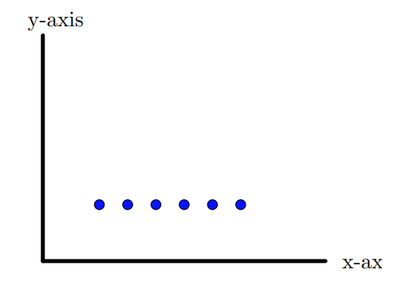
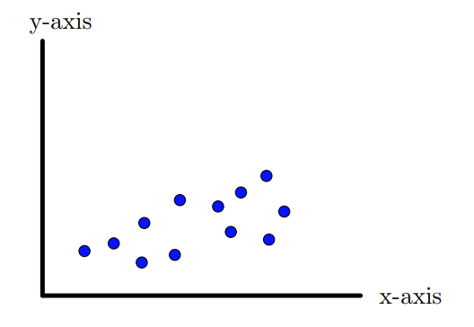
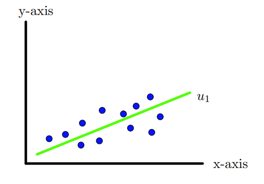
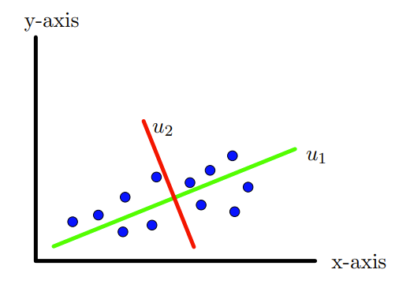
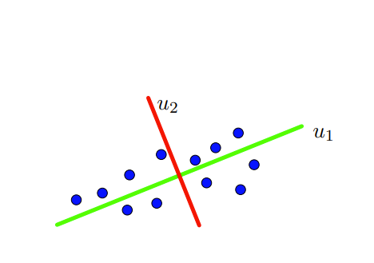
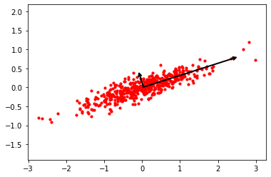
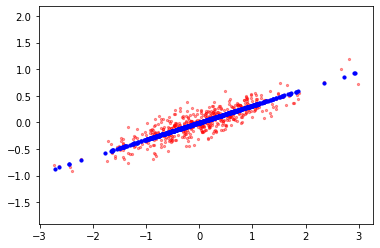
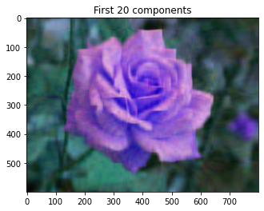
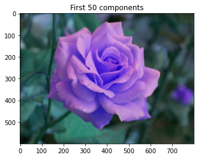

Large datasets with a large number of features/variables are very common and widespread. Interpreting such a large datasets is very complex task. In order to interpret such datasets one requires a method that reduces the dimension/features drastically, at the same time most of the information in the dateset is preserved. The principal component analysis (PCA) is one of the most widely used dimensionality reduction techniques. The main idea of PCA is to reduce the dimensionality in the datasets while preserving much of the variability as much as possible. It does so by creating a new set of uncorrelated variables that successfully maximize the variance. Finding such new variables also known as principal components reduces the problem to solving an eigenvalue-eigenvector problem.
Let us look at the set of points in the plane, (data with two features) in the figure 10.1.1. In this case the data has maximum spread or variability along the \(y\)-axis. Thus if we project, the points onto the \(y\)-axis, the variability in the data can be captured. In particular, we can ignore the \(x\)-coordinates. On the other hand if we look at the set of points in the figure 10.1.2, maximum spread or variability lies along the \(x\)-axis. Thus if we project, the points onto the \(x\)-axis, the variability in the data can be captured. In particular, we can ignore the \(y\)-coordinates. Thus in these two examples, we are able to reduce the dimension by 1.

Figure10.1.1.Variability along \(y\)-axisFigure10.1.2.ariability along \(x\)-axis
Now suppose we have 12 points as show in the Figure 10.1.3 again in \(\R^2\text{,}\) that is having two features/dimensions. The spread of this data seems to be not along \(x\)-axis but roughly along the axis as shown in the Figure 10.1.4, that is, along the vector \(u_1\text{.}\) So if we project these points on the line along \(u_1\) as shown in the Figure 10.1.4, we will have maximum spread or variation of the data. Thus \(u_1\) is the new axis along which the data has maximum variation.

Figure10.1.3.Data with two features.

Figure10.1.4.Variability along vector \(u_1\text{.}\)
Next if one carefully looks into the data points, one can see that the data also has some dispersion or variation along the line given by the direction \(u_2\) as shown in the Figure 10.1.5 and which is not captured by the line along \(u_1\text{.}\) In a way, we need to create another axis which is perpendicular to the 1st one.
Thus we have two perpendicular coordinate axes or a new coordinates system along which all the variations in the data can be captured. In this case, maximum variation along \(u_1\) and second maximum along \(u_2\text{.}\) Here \(u_1\) is called the first principal direction and \(u_2\) is called the second principal direction. Thus we can work with new coordinate axes and forget about the original \(x\) and \(y\)-axes as show in the Figure 10.1.6. We can even rotate the new coordinate system that coincides with original \(x\) and \(y\)-axes.

Figure10.1.5.1st and 2nd principal components \(u_1\) and \(u_2\text{.}\)

Figure10.1.6.1st and 2nd principal components \(u_1\) and \(u_2\text{.}\)
The above two examples, geometrically explains the essence of PCA. The idea is to project the original high dimensional data to a new coordinate system and choose only first we coordinates axes also called principal components. How many principal component to be taken depends upon how much variation we wish to capture.
Subsection10.1.1Mathematics behind PCA
Let us assume that we have a data which has \(d\) features and there are \(n\) of them. This data can be represented by a \(n\times d\) matrix, say \(X\text{.}\) Thus
Thus each columns of \(X\) represents a feature and there are \(n\) samples for each feature.
Now we are looking for an unit vector \(u_1\) and we wish to project the data onto \(u_1\) such that the variance of the projected data is maximum.
Before we explain that in generality, let us look at what is meaning of projection of data in 2 dimension (that is in \(\R^2\)) on an unit vector. Suppose \(u=(a,b)\) is an unit vector ad \(p_1=(x_1,y_1)\) be a point/vector in \(\R^2\text{.}\) Then
The length of the projection is \(p_1x_2+p_2x_2\text{.}\) If we have another point, say \(p_2 =(x_2,y_2)\text{,}\) then the projection of both these points can be captured as
Thus in general the projection of data \(X\) which is \(n\times p\) matrix onto a unit vector \(u_1=\begin{bmatrix}u_{11}\amp u_{12}\amp \cdots \amp u_{1d} \end{bmatrix} ^T\) is
Next we deal with the second issue in PCA, namely, ’variance’. For this we take the centered data \(X_c =X-\overline{X}\text{,}\) where \(\overline{X}=\frac{1}{d}\begin{bmatrix}x_{11}+x_{12}+\cdots+x_{1d}\\ x_{21}+x_{22}+\cdots+x_{2d}\\\vdots\\x_{1n}+x_{1n}+\cdots+x_{1n} \end{bmatrix}\text{.}\) The covariance of \(X\text{,}\) is given
\begin{equation*}
S ={ Cov}(X)=\frac{1}{n-1}{X_c}^TX_c\text{.}
\end{equation*}
Note that (i) \(S\) is symmetric and (ii) Semi-positive definite, all eigenvalues of \(S\) are non negative. Also \(S\) is orthogonally diagonalizable. In particular, there exists an orthogonal matrix \(U = \begin{bmatrix}u_1\amp u_2\amp \cdots \amp u_d \end{bmatrix}\) such that \(U^TSU = { diag }(\lambda_1,\cdots,\lambda_p)\text{.}\) What we wanted was to maximize the variance of projection of the data onto unit vector \(u\text{.}\) That is, we want to find an unit vector \(u\) such that the variance of \(X_cu\) is maximum. In other words,
\begin{align*}
\text{maximize }\amp \frac{1}{n-1}(X_cu)^T{X_cu}=\frac{1}{n-1}u^T(X_c^TX_c)u=u^TSu\\
\text{subject to } \amp \norm{u}=1\text{.}
\end{align*}
It turns out that the solution of this optimization problem is \(u\text{,}\) which is the eigenvector of \(S\text{.}\) Thus the variance of the projected data onto a unit vector is maximum if \(u\) happens to be an eigenvector of the covariance matrix \(S\text{.}\)
Note that \(S\) is of order \(d\times d\) which has \(d\) linearly independent eigenvectors. We arrange these eigenvector corresponding to the decreasing eigenvalues. That \(u_1\) is the eigenvector corresponding to the largest eigenvector \(\lambda_1\) and is called the first principal component. The eigenvector \(u_2\) corresponding to the second highest eigenvalue \(\lambda_2\text{,}\) is called the second principal component. Thus if we project data onto the second principal component that it will have second higher variance. Look at Figure 10.1.7 in which the data is plotted along with the principal components. The Figure 10.1.8, the data projected on the 1st component of PCA is plotted along with the data.

Figure10.1.7.Data set with principal components

Figure10.1.8.Projection on 1st PCA components
Next question is how many principal components, we should choose. This depends upon what percentage of variance of the data we wish to capture. Suppose we want to capture 90% variations, the we choose the 1st \(k\) components such that
Here \(V\) is called the loading matrix. The new data or transformed data \(Z=XV\text{.}\) Once we know the transformed data then we can construct the original data by \(X=ZV^T\text{.}\)
Example10.1.9.
Consider the following 2 dimensional data.
\(x_1\)
2.5
0.5
2.2
1.9
3.0
2.3
2.0
1.0
1.5
1.1
\(x_2\)
2.0
0.7
2.9
2.2
2.8
2.7
1.6
1.1
1.6
0.9
Find the first and the second principal components of this data set. Explain what percentage of variance os explained by the 1st principal component.
The \(\overline{x_1} =1.8\) and \(\overline{x_2}=1.85\text{.}\) The centered data set is
The eigenvalues of \(S\) are eigenvalues \(\lambda_1 =1.1620\) and \(\lambda_2=0.0696\text{.}\) The corresponding eigenvectors are \(u_1 = \begin{pmatrix}0.6894\\0.7243 \end{pmatrix}\) and \(u_2 = \begin{pmatrix}0.7243\\-0.689 \end{pmatrix}\text{.}\)
PC, as mentioned earlier, is a dimensionality reduction techniques. It has numerous applications like, visualization of high dimensional data, facial recognition, computer vision, image compression, determining patterns in a data, data mining, bioinformatics, psychology, analyzing and forecasting stock data,etc.
We mention, image compression as one of the applications.
Subsection10.1.3Image compression with PCA
Similar to SVD, we can also compress the images using PCA. We take any image, first of all we separate the RBG channels of the images and apply PCA separately to red channel, green channel and blue channel. Next we take first \(k\) principal components and project the red, green and blue channel images and then combine the three channels to obtained the transformed image with \(k\) principal components.
Example10.1.11.
Consider an image of a Rose as shown in the Figure 10.1.12 This image is of sinze \(600\times 800\times 3\) array.
After applying PCA and taking first 5, 20 and 50 principal components and combining the three channels together we get the following approximate images as shown in the Figures 10.1.16, Figure 10.1.17, Figure 10.1.18, respectively. Each channel is of size \(600\times 800\text{.}\)
Figure10.1.16.5 components

Figure10.1.17.20 components

Figure10.1.18.50 components
We can see from the image, that 1st 50 components gives a very good approximation to the original image.
Subsection10.1.4Relation Between SVD and PCA
Consider a matrix \(X\) of size \(n\times d\text{.}\) We can apply SVD and PCA on \(X\text{.}\) Suppose the SVD of \(X\) is given by
\begin{equation*}
X = U\Sigma V^T\text{.}
\end{equation*}
Let \(U=[u_1~\ldots~ u_n]\) and \(V^T=\begin{bmatrix}v_1^T\\v_2^T\\\vdots\\v_d^T \end{bmatrix}\text{.}\) Then
The covariance matrix of \(X\) is \(\frac{1}{n-1}X^TX\text{.}\) This shows that \(S\) and \(X^TX\) are similar matrices. If \(\lambda_1,\ldots, \lambda_r\) are non zero eigenvalues of \(S\) and \(\sigma_1,\ldots, \sigma_r\) are singular values of \(X\text{.}\) Then they are related by the following relation
\begin{equation*}
\sigma_i^2=(n-1)\lambda_i, i = 1, 2,\ldots, r\text{.}
\end{equation*}
The relation \(X^TX = V\left( \Sigma^T\Sigma\right) V^T\) shows that right singular vectors are same as principal components. The left singular vectors are given by